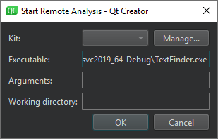

Run Valgrind tools on external applications
With Valgrind's Tool Suite, you can detect memory leaks and profile function execution.
To run the Valgrind tools to analyze external applications for which you do not have a Qt Creator project:
- Go to Analyze > Valgrind Memory Analyzer (External Application) or Valgrind Function Profiler (External Application).

- Select the application to run and analyze, as well as the kit to use.
See also Detect memory leaks with Memcheck, Profile function execution, Kits, Specify Valgrind settings for a project, Valgrind Callgrind, and Valgrind Memcheck.